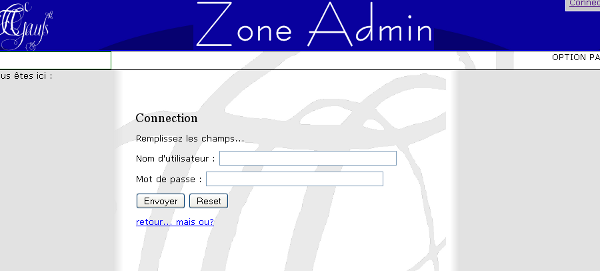
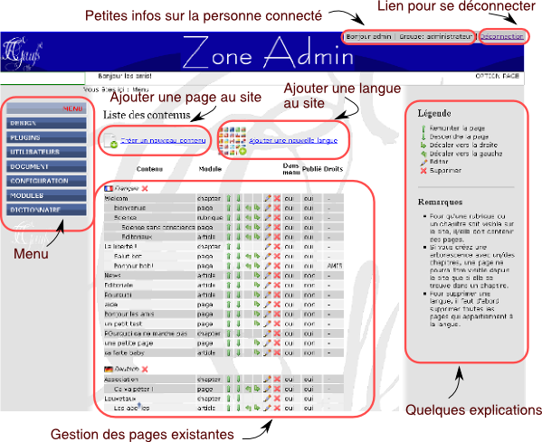

Pour gérer le site (ajouter des pages, supprimer des pages etc.), il faut vous rendre à l'adresse suivante :
Si l'adresse du site est : www.mon-site.com, alors il faut vous rendre à : www.mon-site.com/admin
Si l'adresse du site est : http://www.huber-et-al.de/interstitium, alors il faut vous rendre à : http://www.huber-et-al.de/interstitium/admin
Vous tombez sur une page qui vous demande un nom d'accès ainsi qu'un mot de passe. Par défaut, le nom d'accès est admin et le mot de passe est admin.

Après avoir rentré les données et cliqué sur "envoyer", la page d'accueil de la parte administration du site s'affiche.
